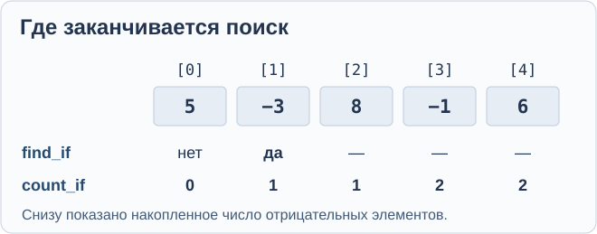

Алгоритмы стандартной библиотеки и лямбды
Чтобы найти первое отрицательное число в векторе {5, -3, 8, -1, 6}, нужны две вещи. Сначала указываем, где искать, затем — какой элемент нам подходит. Алгоритм std::find_if из <algorithm> переберёт числа по порядку и остановится на -3. Для вектора диапазон задаётся двумя итераторами. Например, [a.begin(), a.end()) охватывает весь вектор, а [a.begin() + 1, a.end()) пропускает первый элемент непустого вектора.
Поиск и подсчёт
| Алгоритм | Что возвращает |
|---|---|
std::find(first, last, value) |
Итератор первого элемента, равного value, или last |
std::find_if(first, last, pred) |
Итератор первого элемента, для которого pred вернул true, или last |
std::count(first, last, value) |
Число элементов, равных value |
std::count_if(first, last, pred) |
Число элементов, прошедших проверку pred |
В таблице first и last — границы поиска. Предикат pred — функция, которая отвечает «да» или «нет». Например, bool is_even(int value) { return value % 2 == 0; }. Алгоритм сам вызывает её для элементов диапазона. Поиск может закончиться раньше конца, а подсчёт проходит весь диапазон. В худшем случае оба требуют линейного времени.
Убедись, что итератор отличается от правой границы, прежде чем читать элемент через *it. У вектора индекс найденного элемента можно получить как it - a.begin(). Если поиск выполнялся на участке, сравнивай итератор именно с правой границей этого участка.
Какие данные нужны поиску и подсчёту. Возьмём те же показания, что и в примере внизу. При обычном последовательном проходе процессор загружает очередное число и сравнивает его с нулём. Для поиска первого совпадения ответ известен уже на втором числе. Чтобы получить точное количество, нужно учесть и оставшиеся значения.

В каком месте алгоритм остановит поиск?
Сравни find_if и count_if на пяти показаниях. Выбери порог и открывай по одной проверке предиката.
Компилятор может встроить короткую проверку value < 0 в цикл. В таком случае для каждого элемента достаточно выполнить сравнение и обработать его результат, отдельный вызов функции не нужен. Схема показывает, из каких сравнений получается ответ, а набор команд зависит от компилятора.
Экстремумы и логические проверки
std::min_element и std::max_element возвращают итераторы минимума и максимума. Для пустого диапазона результат совпадает с его концом. std::minmax_element находит обе позиции за один проход и возвращает их парой. Эти операции требуют линейного времени.
std::any_of(first, last, pred)— хотя бы один элемент подходит.std::all_of(first, last, pred)— все элементы подходят.std::none_of(first, last, pred)— подходящих элементов нет.
На пустом диапазоне результаты соответственно false, true и true. Например, у утверждения «все элементы чётные» нет ни одного контрпримера в пустом диапазоне.
Изменение диапазона
| Выражение | Пример от исходного диапазона {1, 2, 3, 4} |
|---|---|
std::reverse(first, last) |
{4, 3, 2, 1} |
std::rotate(first, first + 1, last) |
{2, 3, 4, 1}. Элемент с позиции first + 1 становится первым |
std::fill(first, last, 7) |
{7, 7, 7, 7} |
std::replace(first, last, 2, 9) |
{1, 9, 3, 4} |
std::replace_if(first, last, is_even, 0) |
{1, 0, 3, 0} |
reverse переворачивает порядок, а rotate меняет местами два смежных участка с сохранением порядка внутри каждого. Все перечисленные операции сохраняют длину диапазона.
Лямбда и захват переменной
Лямбда позволяет записать короткую функцию прямо в месте использования. Например, [](int value) { return value < 0; }. Пустые квадратные скобки означают, что лямбда не берёт переменные из окружающего блока. Чтобы использовать находящийся рядом порог threshold, напиши [threshold](int value) { return value > threshold; }. При таком захвате лямбда хранит копию порога.
Как задать порядок сортировки
Компаратор для sort получает два аргумента и отвечает, должен ли первый идти раньше второго. Это отличается от предиката find_if, который проверяет один элемент. Для сортировки по убыванию модуля можно сравнивать std::llabs(static_cast<long long>(left)) > std::llabs(static_cast<long long>(right)).
Приведение к более широкому типу перед вычислением модуля защищает от переполнения на минимальном значении 32-битного int.
Как получить сразу две позиции
std::pair<int, int> хранит два значения. Обращайся к ним через first и second или распакуй структурной привязкой C++17. Например, auto [smallest, largest] = std::minmax_element(a.begin(), a.end()); создаёт два итератора. Если вектор непустой, *smallest и *largest дадут значения.
Как передать именованную функцию
Именованную функцию тоже можно передать как аргумент. Запись bool (*predicate)(int) задаёт указатель на функцию, принимающую int и возвращающую bool. Его вызывают привычным predicate(value). В параметре find_if прямо пишут имя функции is_even или саму лямбду. Для лямбды с захватом лучше использовать стандартный алгоритм напрямую. В обычный указатель на функцию она не преобразуется.
Поиск показаний и замена значений
В массиве показаний найдём первое отрицательное, посчитаем все отрицательные, найдём минимум и максимум и заменим отрицательные нулями.
#include <algorithm>
#include <iostream>
#include <vector>
using std::all_of;
using std::count_if;
using std::cout;
using std::find_if;
using std::minmax_element;
using std::replace_if;
using std::vector;
bool is_negative(int value) {
return value < 0;
}
int main() {
vector<int> readings{5, -3, 8, -1, 6};
auto first_negative = find_if(readings.begin(), readings.end(), is_negative);
if (first_negative != readings.end()) {
cout << first_negative - readings.begin() << ' ' << *first_negative << '\n';
}
cout << count_if(readings.begin(), readings.end(), is_negative) << '\n';
if (!readings.empty()) {
auto [smallest, largest] = minmax_element(readings.begin(), readings.end());
cout << *smallest << ' ' << *largest << '\n';
}
replace_if(readings.begin(), readings.end(), is_negative, 0);
cout << all_of(readings.begin(), readings.end(),
[](int value) { return value >= 0; }) << '\n';
}
| Строка вывода | Откуда берётся результат |
|---|---|
1 -3 |
Первое отрицательное число -3 стоит на позиции 1 |
2 |
Условие value < 0 выполнилось для -3 и -1 |
-3 8 |
Минимальное и максимальное значения до замены |
1 |
После замены ряд равен 5, 0, 8, 0, 6. Все числа удовлетворяют условию value >= 0 |
← Строки · → Преобразование и редактирование последовательностей